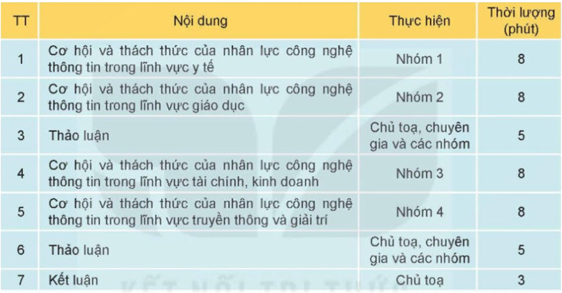
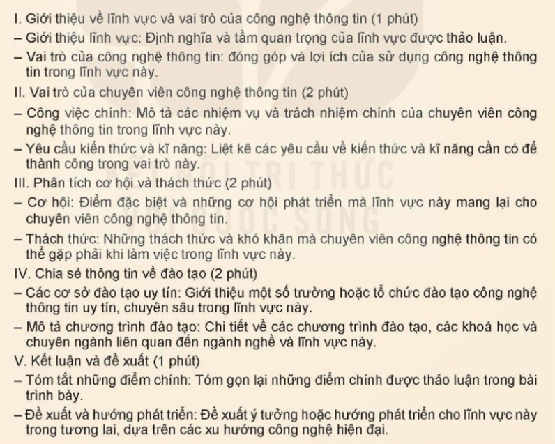
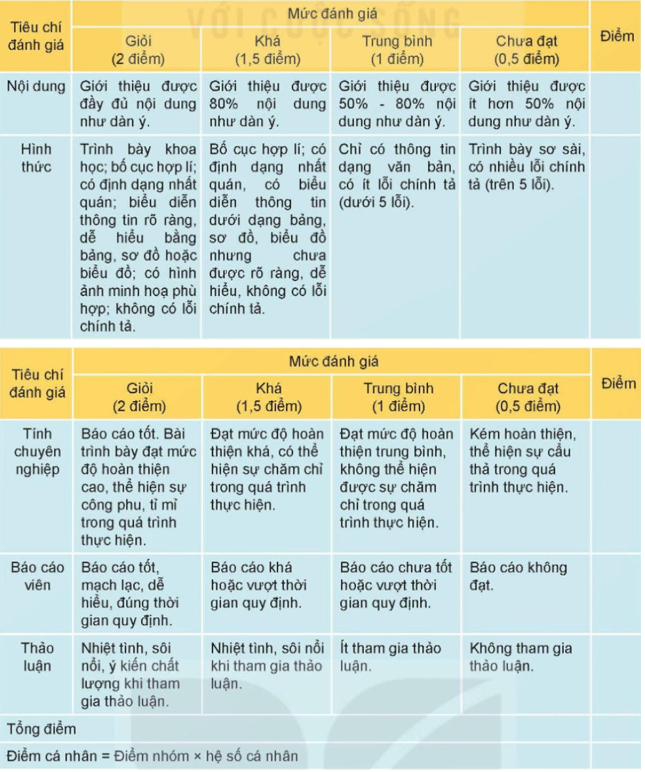
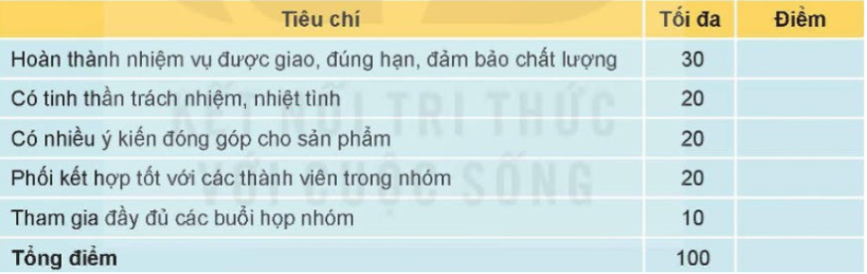

NHIỆM VỤ: TỔ CHỨC HỘI THẢO HƯỚNG NGHIỆP
Có nhiều cách để tìm hiểu về những ngành nghề và lĩnh vực có sử dụng
nhân lực công nghệ thông tin, đồng thời biết được vai trò và công việc của
chuyên viên công nghệ thông tin trong những ngành nghề đó. Ví dụ, tham gia
các hội chợ giới thiệu việc làm, các triển lãm nghề nghiệp, các buổi
thuyết trình định hướng nghề nghiệp,...
Trong Bài học này, ta sẽ cùng tổ chức một Hội thảo hướng nghiệp để
trao đổi về nội dung nêu trên. Hội thảo nên mời thêm một số chuyên gia là
những người có kinh nghiệm làm việc trong lĩnh vực này, hoặc từ các cơ sở
đào tạo hay chuyên gia tuyển dụng liên quan tới các nhóm nghề cần nhân lực
công nghệ thông tin. Họ sẽ giúp đánh giá, nhận định về thông tin mà chúng
ta đã tìm hiểu, đồng thời cung cấp cho chúng ta thêm nhiều thông tin khác
trong thực tiễn xã hội cả trong nước và ngoài nước.
Gợi ý về kế hoạch tổ chức hội thảo:
- Tên hội thảo: Hội thảo hướng nghiệp.
-
Chủ đề: Nhân lực công nghệ thông tin: cơ hội
và thách thức trong kỉ nguyên Số.
- Thời lượng: 1 tiết (45 phút).
- Địa điểm: Phòng học của lớp.
-
Thành phần: Giáo viên, khách mời, học sinh
của lớp.
-
Hình thức: Trực tiếp, có thể kết hợp trực
tuyến với một số khách mời ở xa.
-
Ban tổ chức: 4 thành viên là đại diện từ mỗi
nhóm.
-
Chủ tọa: 3 thành viên do ban tổ chức chọn cử
trong lớp.
-
Nội dung chính:
-
Thảo luận về một số ngành nghề và lĩnh vực có sử dụng nhân lực
công nghệ thông tin.
-
Thảo luận về vai trò và công việc của chuyên viên công nghệ thông
tin trong các ngành nghề đó.
-
Chia sẻ thông tin ngành đào tạo của một số cơ sở đào tạo công nghệ
thông tin phù hợp.
Gợi ý về kế hoạch tổ chức hội thảo:
Vì thời gian hội thảo có hạn, nên chọn ra một vài lĩnh vực mà em
quan tâm nhất để trao đổi, chẳng hạn y tế, giáo dục, tài chính, kinh doanh
hay truyền thông và giải trí. Chương trình hội thảo có thể như sau:
Chương trình:

Nhiệm vụ 1: Chuẩn bị hội thảo
Yêu cầu:
- Thành lập các nhóm và ban tổ chức hội thảo.
- Thảo luận, lập kế hoạch tổ chức hội thảo.
Hướng dẫn:
-
Thảo luận chung để chọn các lĩnh vực sẽ giới thiệu trong hội thảo.
- Chia lớp thành bốn nhóm, phân công theo bốn lĩnh vực đã chọn.
-
Các nhóm thảo luận nhanh về kế hoạch sơ bộ của hội thảo, bầu nhóm
trưởng và thư ký, sau đó cử một đại diện tham gia ban tổ chức.
-
Ban tổ chức họp và thống nhất các nội dung như sau:
-
Yêu cầu về thời hạn nộp bài (trước hội thảo 2 ngày) để ban tổ
chức tập hợp tài liệu hội thảo, nộp cho giáo viên và gửi trước
cho các chuyên gia.
- Phổ biến mọi thông tin, kế hoạch cho các nhóm.
-
Phân công các công việc khác liên quan tới công tác tổ chức hội
thảo. Nếu hội thảo có kết hợp trực tiếp và trực tuyến với chuyên
gia ở xa thì càng lưu ý về trang thiết bị, kĩ thuật cần thiết và
phân công một số thành viên phụ trách kĩ thuật.
Nhiệm vụ 2: Xây dựng bài trình bày
Yêu cầu: Các nhóm chuẩn bị bài trình bày
theo phân công và yêu cầu của ban tổ chức.
Hướng dẫn:
- Bước 1. Lập dàn ý trình bày
Thảo luận nhóm để lập dàn ý của bài trình bày. Dựa trên nội dung
và mục đích của hội thảo, mỗi bài trình bày sẽ tập trung vào việc cung
cấp thông tin chính xác và chi tiết về lĩnh vực, vai trò, cơ hội và
thách thức, đồng thời cung cấp cho người nghe cái nhìn toàn diện về
những gì được chuyên viên công nghệ thông tin cần biết và làm trong
lĩnh vực đó. Các bài trình bày có thể bao gồm các phần chính sau:

- Bước 2. Thu thập thông tin
Thu thập thông tin từ các nguồn tin gợi ý sau:
-
Trang web chính thức của các tổ chức, công ty, cơ sở đào tạo liên
quan tới lĩnh vực thảo luận.
- Các nghiên cứu bài báo từ các tổ chức uy tín.
- Các tin tuyển dụng liên quan đến ngành nghề.
- Ý kiến từ các diễn đàn, các chuyên gia trong ngành.
-
Bước 3. Chọn lọc tổng hợp thông tin và
xây dựng bài trình bày.
-
Thảo luận nhóm để phân tích kiểm chứng các thông tin thu được ở
Bước 2, chọn lọc và tổng hợp thông tin.
-
Với các thông tin được chọn để trình bày, lựa chọn cách biểu diễn
phù hợp (bảng, biểu đồ, sơ đồ, ảnh minh họa,…) để thông tin được
rõ ràng, dễ hiểu. Lưu ý nêu rõ nguồn của các thông tin sử dụng.
-
Sử dụng phần mềm trình chiếu để xây dựng bài trình bày theo dàn ý
trên. Lưu ý về giới hạn số lượng trang chiếu và thời lượng trình
bày.
-
Bước 4. Báo cáo thử, hoàn thiện bài
trình bày.
- Thảo luận nhóm, chọn báo cáo viên.
-
Báo cáo thử, các thành viên khác nhận xét, góp ý cho bài trình bày
và báo cáo viên.
- Chỉnh sửa nội dung bài trình bày.
- Hoàn thiện bài trình bày và lên phương án trình bày.
Lưu ý: Nộp bài cho ban tổ chức đúng hạn.
Nhiệm vụ 3: Tổ chức hội thảo và đánh giá kết quả
Yêu cầu: Tổ chức hội thảo thành công theo
đúng kế hoạch.
Hướng dẫn:
-
Tại buổi hội thảo, ban tổ chức và chủ tọa sẽ điều hành hội thảo theo
chương trình và kế hoạch đã thống nhất.
-
Các nhóm trình bày theo thứ tự, tham gia thảo luận, lắng nghe góp ý,
hỏi đáp với chuyên gia.
-
Điểm của các nhóm sẽ được đánh giá bởi giáo viên theo các tiêu chí
gợi ý sau:

Hệ số cá nhân được xác định bằng tổng điểm cá nhân chia cho 100%, điểm
của cá nhân sẽ được đánh giá bởi các thành viên trong nhóm theo các
tiêu chí sau:

Ngoài ra, lớp có thể thảo luận và thống nhất điểm thưởng cho các cá
nhân trong ban tổ chức và chủ tọa hội thảo.